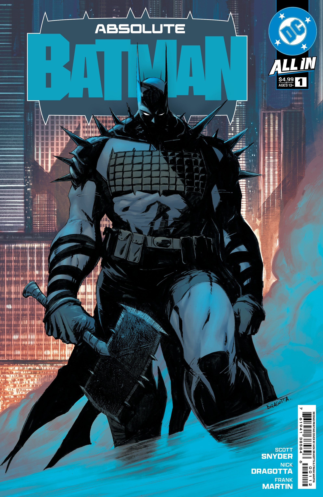
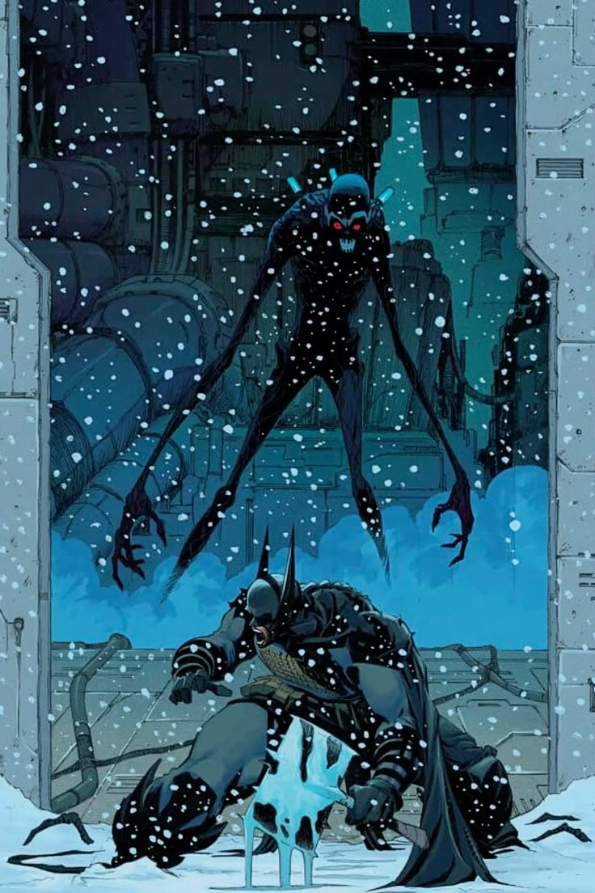
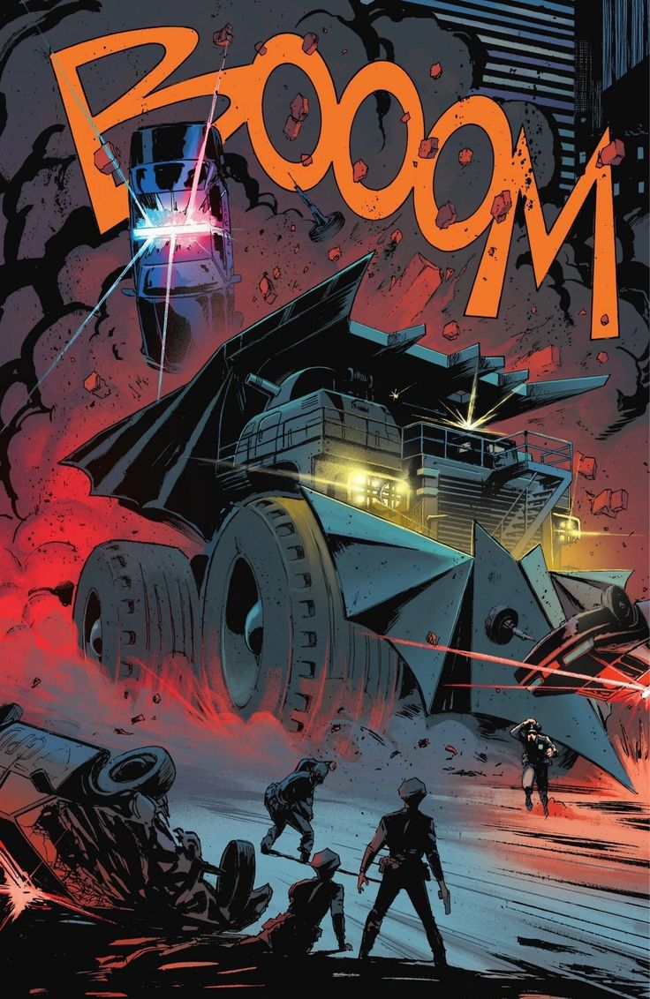
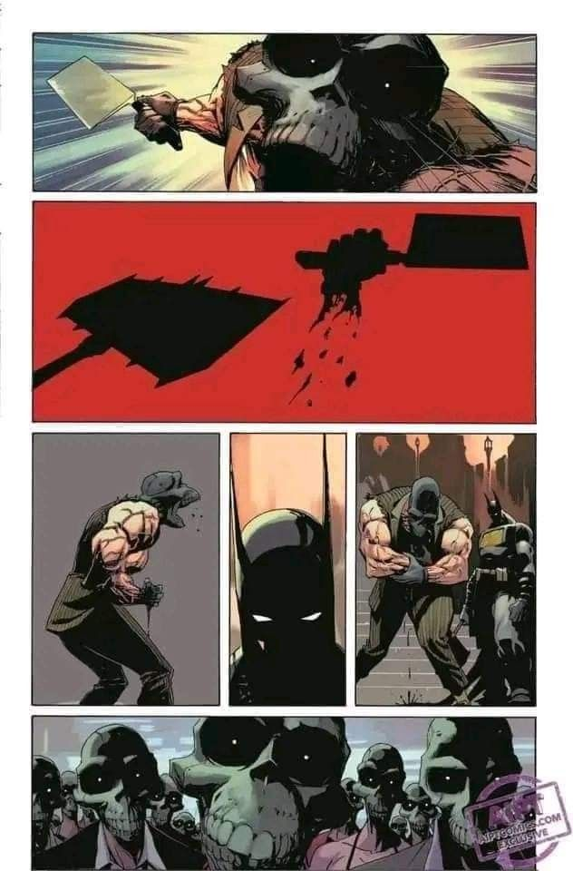

Introducción
Absolute Batman es una audaz reinterpretación del icónico vigilante de Gotham. Esta nueva serie propone una mirada más introspectiva, moderna y visualmente impactante del personaje de Bruce Wayne. A través de tramas que equilibran acción, psicología y dilemas morales, la serie se distancia del formato clásico para acercarse más a un relato noir contemporáneo.
Autores y equipo creativo
Detrás de esta ambiciosa propuesta se encuentra un equipo creativo de primer nivel. El guion está a cargo de Scott Snyder, reconocido por su trabajo en cómics adultos y psicológicos, mientras que el arte corre por cuenta de Nick Dragotta, que combina el estilo europeo con el realismo moderno.
Esta combinación resulta en una obra sólida que respeta la esencia del personaje, pero lo empuja hacia nuevas profundidades emocionales y narrativas.
Estilo artístico
La estética de Absolute Batman destaca por su paleta de colores oscuros, uso expresivo de sombras y composiciones cinematográficas. Las viñetas evocan el tono sombrío de Gotham, utilizando el silencio y la atmósfera como herramientas narrativas.
No hay colores saturados ni fondos recargados. Cada trazo transmite intención, y la narrativa visual se siente cercana al cine de autor o thrillers psicológicos.
Recepción e impacto
Desde su lanzamiento, Absolute Batman ha generado interés tanto en nuevos lectores como en fanáticos veteranos. Su capacidad de combinar lo clásico con lo contemporáneo ha sido clave para su éxito.
Críticos han señalado su valor como posible punto de entrada definitivo para entender la dualidad de Batman, así como un estudio de personaje maduro dentro del cómic comercial.
Conclusión
Si estás buscando una nueva forma de leer a Batman, Absolute Batman representa una apuesta seria, profunda y visualmente poderosa. Esta serie marca un antes y un después en la evolución del Caballero Oscuro para las nuevas generaciones.